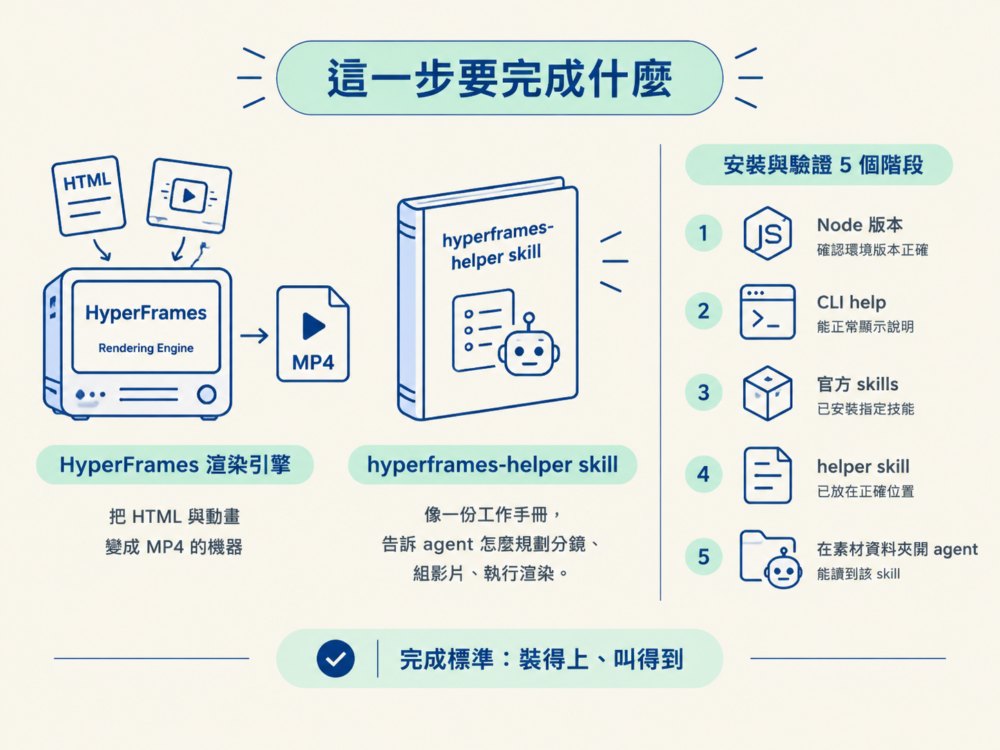
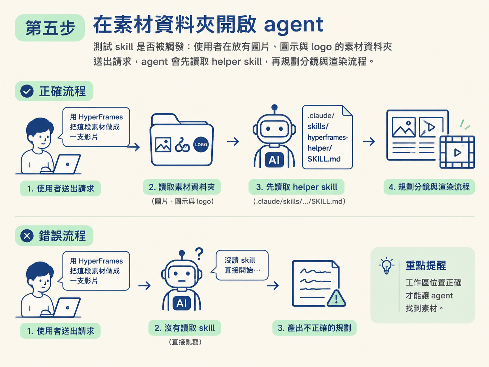

這一節的目標，是從零把 HyperFrames CLI 與 hyperframes-helper skill 裝進專案，並用版本、help 與實際請求確認每一步都能正常運作。
先看整條 pipeline：模型與 effort 選好之後，還需要兩個工具零件。HyperFrames 是把 HTML 與動畫渲染成 MP4 的引擎；skill 則像一份工作手冊，告訴 agent 在真實專案裡該怎麼規劃分鏡、組影片與執行渲染。少了前者，影片做不出來；少了後者，agent 可能會直接動手，卻踩進官方文件沒有說明的實務陷阱。
這一節不先深入解釋 lint、付費或讀 skill 的原理，而是先把環境裝好並驗證成功。完成後，你會得到一個能在任何 Mac 上重跑的設定：CLI 叫得起來、skill 放在正確位置，agent 也能在素材工作區裡讀到它。

.claude/skills/ 的 agent。先確認執行環境，因為後面的 npx 指令需要 Node 18 以上：
node --version # v18+ required如果輸出的版本低於 v18，先升級 Node 再繼續。這個檢查雖然簡單，卻是後面所有指令的地基；跳過它，錯誤可能會拖到安裝階段才出現，反而更難排查。
HyperFrames 不需要在每台機器上全域安裝，可以用 npx 直接抓取最新版執行。先跑一次 help，確認 CLI 找得到而且確實能啟動：
npx hyperframes@latest --help如果畫面出現 help 說明，就代表 CLI 已經通了。這裡使用 @latest，是為了每次都取得最新版本，避免 CLI 太舊，和 skill 裡的規則對不起來。
HyperFrames 提供一組官方 skill，例如 /hyperframes、/gsap 與 /website-to-hyperframes。用下面這行指令把它們加入環境：
npx skills add heygen-com/hyperframes # adds /hyperframes, /gsap, /website-to-hyperframes這裡加入的是「官方版」skill，提供網站轉影片、GSAP 動畫等通用能力。接下來要放進專案的 hyperframes-helper，則負責補上實務上的生產細節。兩者不是二選一，而是分工合作：一個提供工具能力，一個提供工作方法。
hyperframes-helper 不是用 npm 安裝，而是把整個 skill 目錄放到專案裡。先 clone repo，再將其中的 skill 資料夾複製到專案的 .claude/skills/：
# 1. Clone this repo into your project
git clone https://github.com/robonuggets/hyperframes-helper
# 2. Copy the skill into your project's .claude/skills/
cp -r hyperframes-helper/.claude/skills/hyperframes-helper YOUR_PROJECT/.claude/skills/
# 3. Open your project in Claude Code (or any agent that reads .claude/skills/)
# 4. Ask the agent for a Hyperframes video — it'll invoke the skill複製完成後，專案裡應該會有這個檔案：
.claude/skills/hyperframes-helper/SKILL.md
這份檔案涵蓋三個層級的工作流程：website-to-video、分鏡，以及完整引導的 talking-head 影片。裡面還包含 16 條容易觸發 lint 的錯誤、多片段剪輯樣式，以及一組可以直接複製貼上的 motion graphics recipe。
這個 skill 的 repo 也附有一份 CLAUDE.md，內容是給 agent 看的行為規則。下一節談護欄時會用到它；目前只要確認它已經跟著專案一起就位即可。
最後，把 agent 開在正確的工作區。請選擇那個已經放好圖片、圖示與 logo 的資料夾，而不是隨便開一個空目錄。
這個位置會直接影響 agent 能不能找到素材。當檔案就在工作區裡，agent 就能直接讀取，不必每次都靠你貼上完整路徑；整個流程也比較像在同一張工作桌上做事，而不是一直搬運箱子。
開啟後，送出一個簡單請求測試 skill 是否被觸發：
用 HyperFrames 把這段素材做成一支影片。
如果安裝正確，agent 應該會先讀取 helper skill，再開始規劃流程，而不是一上來就直接亂寫。

驗證這次安裝，可以記住一個口訣：每一步都用工具自己回報的訊息確認。完成後，應該看到以下三個結果：
node --version 印出 v18 以上的版本。npx hyperframes@latest --help 印出說明，而且 .claude/skills/hyperframes-helper/SKILL.md 確實存在。三件事都成立，就表示工作區已經架好。這一節先確認「裝得上、叫得到」；至於那些 lint、付費與讀 skill 的規則，以及為什麼必須遵守，留到第五節的護欄再處理。
HyperFrames 用
npx hyperframes@latest呼叫，不必全域安裝；官方 skills 用npx skills add heygen-com/hyperframes加入；helper skill 則是把 repo 裡的.claude/skills/hyperframes-helper/複製進專案。最後，把 agent 開在放素材的資料夾，再用node --version、--help與「請 agent 做一支影片」逐項驗證。裝得上、叫得到，就算完成。
現在引擎與 skill 都已經就定位，但 agent 還沒有「看懂素材」的能力。接下來需要逐字稿；轉錄工具要選哪一家，以及 API 金鑰應該放在哪裡，就是下一節要做的決定。